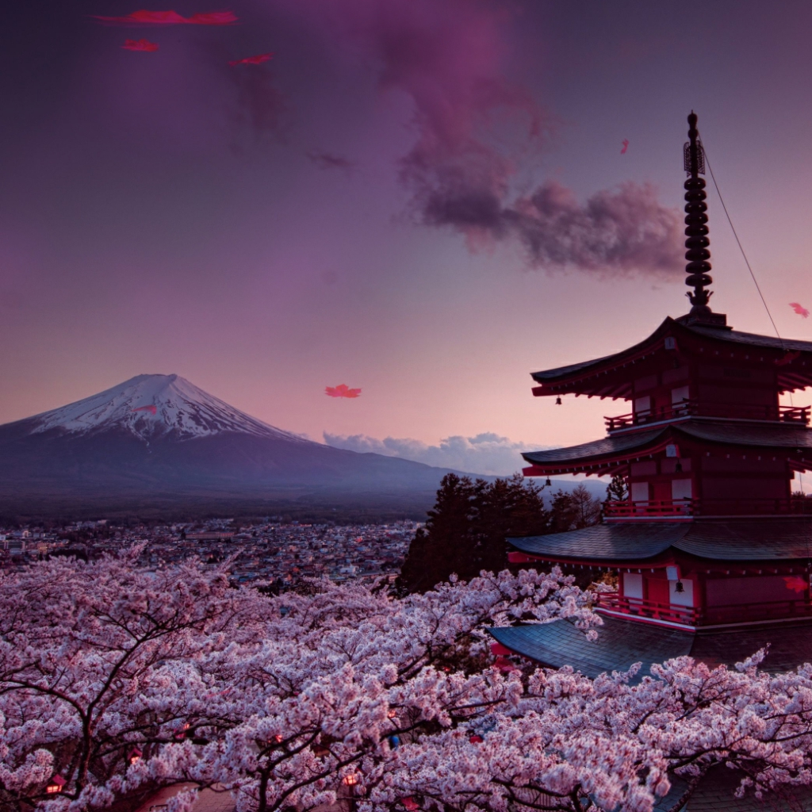
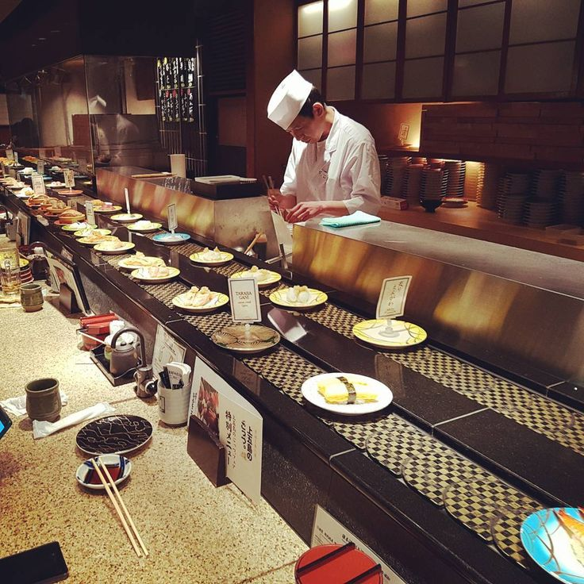

Proxima estação
Japão
Terra do Sol nascente

Seja bem-vindo a um mundo onde a tradição encontra a modernidade. Explore a rica história, a deliciosa culinária e os destinos deslumbrantes do Japão.
História e Cultura
Os primeiros habitantes do Japão, conhecidos como Jomon, estabeleceram-se aqui por volta de 10.000 a.C., desenvolvendo uma cultura distinta de cerâmica e arte. Milênios depois, a chegada dos Yayoi, trazendo técnicas agrícolas e metalurgia, moldou as bases da sociedade japonesa. A era dos imperadores começou no século VI d.C., marcando o início de uma linha imperial que continua até os dias de hoje. O Japão, durante os séculos, foi influenciado por culturas vizinhas, como a chinesa, incorporando elementos budistas e confucionistas.
O Japão reconstruir-se com notável resiliência, evoluindo para uma potência econômica e cultural global. Hoje, a nação é conhecida por sua tecnologia inovadora, artes tradicionais, gastronomia requintada e uma fusão única de tradição e modernidade. Explore esta rica jornada histórica enquanto mergulha na cultura do Japão, onde cada pedra pavimenta o caminho para um destino extraordinário.
Gastronomia
A gastronomia japonesa é conhecida mundialmente por sua sofisticação, frescor, apresentação artística e sabores únicos. Ela incorpora uma variedade de pratos que refletem a rica cultura e tradição do Japão. Aqui estão alguns elementos destacados da gastronomia japonesa:
Pontos Turisticos
Explore os destinos mais populares, desde os movimentados bairros de Tóquio até os santuários tranquilos de Kyoto. Tokyo: A capital movimentada, lar de tecnologia de ponta e vida noturna agitada. Kyoto Uma cidade repleta de templos, jardins zen e tradições antigas.
Dicas de Viagem

Prepare-se para a sua jornada com dicas úteis sobre transporte, costumes e muito mais.
Utilize o eficiente sistema de trem ou ônibus para explorar o país.
Aprenda algumas regras de etiqueta, como a cortesia ao entrar em templos
iene é a moeda local. Certifique-se de ter dinheiro em espécie, pois
alguns lugares podem não aceitar cartões.